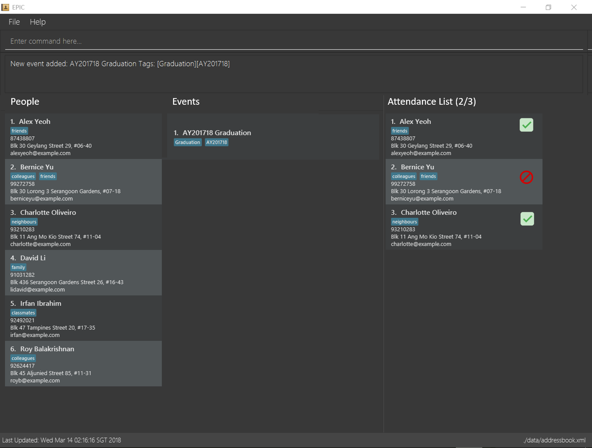

By: Team W13-B2 Since: Mar 2018 Licence: MIT
- 1. Introduction
- 2. Quick Start
- 3. Layout
- 4. Features
- 4.1. Viewing help :
help - 4.2. Adding a person:
add - 4.3. Listing all persons :
list - 4.4. Editing a person :
edit - 4.5. Locating persons by name:
find - 4.6. Deleting a person :
delete - 4.7. Selecting a person :
select[Deprecated] - 4.8. Adding an event:
add-event[Since v1.2] - 4.9. Listing all events:
list-events[Since v1.2] - 4.10. Editing an event :
edit-event[Since v1.2] - 4.11. Locating events by name:
find-event[Since v1.2] - 4.12. Deleting an event :
delete-event[Since v1.2] - 4.13. Registering a person to an event:
register[Since v1.2] - 4.14. Deregistering a person from an event:
deregister[Since v1.2] - 4.15. Listing all persons registered in an event:
list-registered[Since v1.2] - 4.16. Toggle attendance for event participant :
toggle[Since v1.4] - 4.17. Listing entered commands :
history - 4.18. Undoing previous command :
undo - 4.19. Redoing the previously undone command :
redo - 4.20. Clearing all entries :
clear - 4.21. Exiting the program :
exit - 4.22. Saving the data
- 4.23. Exporting contact information to a csv file :
export[coming in v1.5] - 4.24. Importing contact information from a csv file :
import[coming in v1.5] - 4.25. Adding feedback for an event from a participant :
add-feedback[coming in v2.0] - 4.26. Exporting event details to a csv file :
export-event[coming in v2.0] - 4.27. Registering all persons with a particular tag to an event :
register-by-tag[coming in v2.0] - 4.28. Adding automatic email reminder to event participants :
add-reminder[coming in v2.0] - 4.29. Adding hotkeys for commands :
add-hotkey[coming in v2.0]
- 4.1. Viewing help :
- 5. FAQ
- 6. Command Summary
- Appendix A: List of undoable commands
1. Introduction
Event Planning isn’t Complicated (EPIC) is a desktop application used for event planning and registration for large organisations. EPIC is optimized for event planners who prefer to work with a Command Line Interface (CLI) while still having the benefits of a Graphical User Interface (GUI). If you can type fast, EPIC can get your event planning tasks and registration processes for events done faster than traditional GUI apps or pen and paper registration. Interested? Jump to the Section 2, “Quick Start” to get started. Enjoy!
2. Quick Start
This section walks you through setting up EPIC on your computer, and goes through some example commands you can try.
-
Ensure you have Java version
1.8.0_60or later installed in your computer.Having any Java 8 version is not enough.
This app will not work with earlier versions of Java 8. -
Download the latest
EPIC.jarhere. -
Copy the file to the folder you want to use as the home folder for your Event Planner.
-
Double-click the file to start the app. The GUI should appear in a few seconds.
 -
Type the command in the command box and press Enter to execute it.
e.g. typinghelpand pressing Enter will open the help window. -
Some example commands you can try:
-
list: lists all contacts -
addn/John Doe p/98765432 e/johnd@example.com a/John street, block 123, #01-01: adds a contact namedJohn Doeto the Event Planner. -
delete3: deletes the 3rd contact shown in the current list -
exit: exits the app
-
-
Refer to Section 4, “Features” for details of each command.
3. Layout
This section details the layout of the GUI, and common ways to interact with it.
-
The top of the GUI is the command box, where you can see commands as you are typing them.
-
The main part of the GUI is split into three panes.
-
In the leftmost pane, a list of persons in your organisation is displayed.
-
In the middle pane, a list of events is displayed.
-
In the rightmost pane, a list of registered persons for the selected event is displayed.
-
The lists displayed in the panes can be filtered using the find or find-event commands!
|
-
Clicking on an event in the middle pane selects that event, allowing you to see all persons registered for that event in the rightmost pane, as well as perform actions such as toggling attendance. This can also be done with the
selectcommand in the command box. -
Clicking on the tick/cross symbol next to a person’s details in the rightmost pane allows you to toggle the attendance of the person for the currently selected event. This can also be done with the
togglecommand.
4. Features
This section details the various features EPIC supports.
Command Format
-
Words in
UPPER_CASEare the parameters to be supplied by the user e.g. inadd n/NAME,NAMEis a parameter which can be used asadd n/John Doe. -
Items in square brackets are optional e.g
n/NAME [t/TAG]can be used asn/John Doe t/friendor asn/John Doe. -
Items with
… after them can be used multiple times including zero times e.g.[t/TAG]…can be used ast/friend,t/friend t/familyetc. -
Parameters can be in any order e.g. if the command specifies
n/NAME p/PHONE_NUMBER,p/PHONE_NUMBER n/NAMEis also acceptable.
4.2. Adding a person: add
Adds a person to the event planner
Format: add n/NAME p/PHONE_NUMBER e/EMAIL a/ADDRESS [t/TAG]…
| A person can have any number of tags (including 0) |
Examples:
-
add n/John Doe p/98765432 e/johnd@example.com a/John street, block 123, #01-01 -
add n/Betsy Crowe t/friend e/betsycrowe@example.com a/Newgate Prison p/1234567 t/criminal
4.3. Listing all persons : list
Shows a list of all persons in the event planner on the left pane.
Format: list
4.4. Editing a person : edit
Edits an existing person in the event planner.
Format: edit INDEX [n/NAME] [p/PHONE] [e/EMAIL] [a/ADDRESS] [t/TAG]…
Examples:
-
edit 1 p/91234567 e/johndoe@example.com
Edits the phone number and email address of the 1st person to be91234567andjohndoe@example.comrespectively. -
edit 2 n/Betsy Crower t/
Edits the name of the 2nd person to beBetsy Crowerand clears all existing tags.
4.5. Locating persons by name: find
Finds persons in your organisation whose names contain any of the given keywords.
Format: find KEYWORD [MORE_KEYWORDS]
Examples:
-
find John
ReturnsjohnandJohn Doe -
find Betsy Tim John
Returns any person having namesBetsy,Tim, orJohn
4.6. Deleting a person : delete
Deletes the specified person from the event planner.
Format: delete INDEX
Examples:
-
list
delete 2
Deletes the 2nd person in the event planner. -
find Betsy
delete 1
Deletes the 1st person in the results of thefindcommand.
4.7. Selecting a person : select [Deprecated]
Selects the person identified by the index number used in the last person listing.
Format: select INDEX
Examples:
-
list
select 2
Selects the 2nd person in the event planner. -
find Betsy
select 1
Selects the 1st person in the results of thefindcommand.
4.8. Adding an event: add-event [Since v1.2]
Adds an event to the event planner.
Format: add-event n/NAME [t/TAG]…
| An event can have any number of tags (including 0) |
Examples:
-
add-event n/AY201718 Graduation t/Graduation -
add-event n/Computing Seminar
4.9. Listing all events: list-events [Since v1.2]
Shows a list of all events in the event planner in the middle pane.
Format: list-events
4.10. Editing an event : edit-event [Since v1.2]
Edits an existing event in the event planner.
Format: edit-event INDEX [n/NAME] [t/TAG]…
Examples:
-
edit-event 1 n/IoT Talk t/talk
Edits the name and tag of the 1st event to beIoT Talkandtalkrespectively. -
edit-event 2 n/Graduation Day t/
Edits the name of the 2nd event to beGraduation Dayand clears all existing tags.
4.11. Locating events by name: find-event [Since v1.2]
Finds events whose names contain any of the given keywords.
Format: find-event KEYWORD [MORE_KEYWORDS]
Examples:
-
find-event Talk
ReturnsTalkandFood Talk -
find-event Talk Competition
Returns any event having nameTalk, orCompetition
4.12. Deleting an event : delete-event [Since v1.2]
Deletes the specified event from the event planner.
Format: delete-event INDEX
Examples:
-
list-events
delete-event 2
Deletes the 2nd event in the event planner. -
find-event Talk
delete-event 1
Deletes the 1st event in the results of thefind-eventcommand.
4.13. Registering a person to an event: register [Since v1.2]
Registers the specified person to an event in the event planner.
Format: register INDEX EVENT_NAME
Examples:
-
list
register 2 AY201718 Graduation
Registers the 2nd person in the event planner to AY201718 Graduation. -
find Betsy
register 1 Computing Seminar
Registers the 1st person in the results of thefindcommand to Computing Seminar.
4.14. Deregistering a person from an event: deregister [Since v1.2]
Deregisters the specified person from an event in the event planner.
Format: deregister INDEX EVENT_NAME
Examples:
-
list
deregister 2 AY201718 Graduation
Deregisters the 2nd person in the event planner from AY201718 Graduation. -
find Betsy
deregister 1 Computing Seminar
Deregisters the 1st person in the results of thefindcommand to Computing Seminar.
4.15. Listing all persons registered in an event: list-registered [Since v1.2]
Lists all persons registered for the specified event.
Format: list-registered EVENT_NAME
4.16. Toggle attendance for event participant : toggle [Since v1.4]
Toggles the attendance of a participant to an event from attended to not attended and vice versa.
Format: toggle INDEX
Examples:
-
find-event AY201718 Graduation
select-event 1
toggle 1
Toggles the attendance of the 1st person attendee in the attendance list of AY201718 Graduation.
4.17. Listing entered commands : history
Lists all the commands that you have entered in reverse chronological order.
Format: history
|
Pressing the up and down arrows will display the previous and next input respectively in the command box. |
4.18. Undoing previous command : undo
Restores the event planner to the state before the previous undoable command was executed.
There is no guarantee that relative ordering of persons/events will be maintained after the undoing
of a delete or delete-event command.
Format: undo
|
Undoable commands: those commands that modify the event planner’s content. To see the full list of undoable commands, refer to Appendix A, List of undoable commands |
Examples:
-
delete 1
list
undo(reverses thedelete 1command) -
select 1
list
undo
Theundocommand fails as there are no undoable commands executed previously. -
delete 1
clear
undo(reverses theclearcommand)
undo(reverses thedelete 1command)
4.19. Redoing the previously undone command : redo
Reverses the most recent undo command.
Format: redo
Examples:
-
delete 1
undo(reverses thedelete 1command)
redo(reapplies thedelete 1command) -
delete 1
redo
Theredocommand fails as there are noundocommands executed previously. -
delete 1
clear
undo(reverses theclearcommand)
undo(reverses thedelete 1command)
redo(reapplies thedelete 1command)
redo(reapplies theclearcommand)
4.20. Clearing all entries : clear
Clears all entries from the event planner.
Format: clear
4.21. Exiting the program : exit
Exits the program.
Format: exit
4.22. Saving the data
Event planner data are saved in the hard disk automatically after any command that changes the data.
There is no need to save manually.
4.23. Exporting contact information to a csv file : export [coming in v1.5]
Exports the list of all persons in the event planner to a csv file.
Format: export FILE_NAME
4.24. Importing contact information from a csv file : import [coming in v1.5]
Imports a list of persons from a csv file and adds them to the event planner.
Format: import FILE_NAME
4.25. Adding feedback for an event from a participant : add-feedback [coming in v2.0]
Adds feedback for an event from a participant of the event.
Format: add-feedback INDEX EVENT-NAME FEEDBACK
4.26. Exporting event details to a csv file : export-event [coming in v2.0]
Exports event details for a single event into a csv file.
Format: export-event EVENT_NAME FILE_NAME
4.27. Registering all persons with a particular tag to an event : register-by-tag [coming in v2.0]
Registers all persons with a particular tag to an event in the event planner.
Format: register-by-tag TAG EVENT_NAME
4.28. Adding automatic email reminder to event participants : add-reminder [coming in v2.0]
Adds an automatic email reminder at the stipulated time to all event participants.
Format: add-reminder DAYS_OFFSET EVENT_NAME
4.29. Adding hotkeys for commands : add-hotkey [coming in v2.0]
Adds a hotkey for a command.
Format: add-hotkey HOTKEY COMMAND_NAME
5. FAQ
Q: How do I transfer my data to another Computer?
A: Install the app in the other computer and overwrite the empty data file it creates with the data file of your previous Event Planner.
By default, this file is in data/addressbook.xml.
6. Command Summary
-
Add Event
add-event n/NAME [t/TAG]…
e.g.add-event n/AY201718 Graduation t/Graduation -
Add Person
add n/NAME p/PHONE_NUMBER e/EMAIL a/ADDRESS [t/TAG]…
e.g.add n/James Ho p/22224444 e/jamesho@example.com a/123, Clementi Rd, 1234665 t/friend t/colleague -
Clear Persons and Events :
clear -
Delete Event :
delete-event INDEX
e.g.delete-event 3 -
Delete Person :
delete INDEX
e.g.delete 3 -
Deregister Person :
deregister INDEX EVENT_NAME
e.g.deregister 1 Computing Seminar -
Edit Event :
edit-event INDEX [n/NAME] [t/TAG]…
e.g.edit-event 1 n/IoT Talk t/talk -
Edit Person :
edit INDEX [n/NAME] [p/PHONE_NUMBER] [e/EMAIL] [a/ADDRESS] [t/TAG]…
e.g.edit 2 n/James Lee e/jameslee@example.com -
Find Event :
find-event KEYWORD [MORE_KEYWORDS]
e.g.find-event Talk Competition -
Find Person :
find KEYWORD [MORE_KEYWORDS]
e.g.find James Jake -
Help :
help -
History :
history -
List Events :
list-events -
List Persons :
list -
List Registered Persons :
list-registered -
Redo :
redo -
Register Person :
register INDEX EVENT_NAME
e.g.register 1 Computing Seminar -
Select Person :
select INDEX
e.g.select 2 -
Toggle Attendance :
toggle INDEX
e.g.toggle 1 -
Undo :
undo
Appendix A: List of undoable commands
-
add -
delete -
add-event -
delete-event -
edit -
edit-event -
register -
deregister -
toggle -
clear